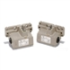

Building Automation
Industrial Automation
Power Automation & Safety


Bangladesh Distributor
Multi-pole Switches
These Multi-pole Limit Switches can be used in sequence control of machine tools, transfer machines, and other equipment.
Multi-pole Switches List
There are 1 products of Multi-pole Switches.
 Multiple Limit Switch VB
A New Monoblock Multiple Limit Switch Incorporating a Head Box with a Tough Head and Ensuring High Sealing Performance and a Mechanical Durability of 5,000,000 Operations
Related Contents
- Limit Switches
© Copyright kyoto Engineering & Automation Ltd. All Rights Reserved.